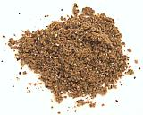

|
Pilau MasalaEast Africa (Tanzania, Kenya) | ||||
| Makes: Effort: Sched: DoAhead: |
1-3/4 oz * 15 min Yes |
East Africa has long been influenced by India and Southeast Asia, probably for thousands of years, thus this Indian style masala (spice mix). It's most often used to season pilaus (rice pilafs) but has other uses as well. | |||
|
1-1/2 1 1/2 1/2 1/2 |
T T t t t |
Cumin seeds Cardamon seeds Black Pepper Cinnamon Cloves, whole |
Make: - (15 min)
|